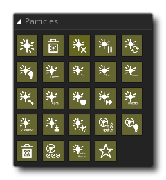

Para cosas complejas en GameMaker Studio 2 normalmente tendrías un objeto y luego crearías instancias de ese objeto dentro de la sala. Sin embargo, para efectos de gráficos, esto puede ser costoso ya que cada instancia viene con un "costo" en el procesamiento debido a las variables que contiene y los códigos que tiene en los diferentes eventos. Puede reducir este costo recurriendo a los mosaicos para dibujar sus gráficos, o incluso utilizando la capa de activos en el editor de sala, pero ambos generalmente solo se usan para dibujar gráficos simples que mantienen la misma posición en el tiempo y tienen pocos efectos especiales. Sin embargo, hay otra opción para dibujar efectos de gráficos rápidos pero versátiles en tus juegos, y es usar partículas.
Las partículas son recursos gráficos con ciertas propiedades que se definen dentro de un sistema de partículas. Estas propiedades no se pueden manipular directamente para partículas individuales, sino que se cambian a través de las acciones que se utilizan para definir los tipos de partículas individuales dentro del sistema. Son muy útiles para crear efectos hermosos y llamativos (¡o sutiles y discretos!) Como explosiones, calcomanías, lluvia, nieve, campos estelares y escombros en un juego sin la CPU o la GPU que utilizan instancias y / o fichas y recursos..
La configuración básica para un sistema de partículas sigue tres pasos:
- Crear un sistema de partículas: el sistema de partículas es como un contenedor que usaremos para sostener nuestros diferentes emisores de partículas a medida que los usamos. Usamos acciones para definir una serie de aspectos visuales y comportamientos para nuestras partículas, y luego las usamos desde un emisor que se ha colocado en el "contenedor" (el sistema de partículas) para que puedan verse.
- Crear tipos de partículas: los "tipos" de partículas son la definición del efecto gráfico en sí. Puede tener diferentes tipos de partículas, cada una con su propio rango de colores, alfas, tamaños y movimientos, pero es importante tener en cuenta que no tiene control sobre las partículas individuales. Usted define una serie de parámetros y la partícula se creará para tener una distribución aleatoria de comportamientos elegidos de ellos.
- Crear Emisores de Partículas: Los emisores se utilizan para reventar o transmitir partículas desde límites muy claramente definidos, y se les pueden dar parámetros especiales para definir exactamente cómo se debe crear un efecto de partículas dado. Los emisores pueden ser opcionales, ya que puede usar la acción Burst Particles para emular muchos de los efectos de un emisor, con la ventaja adicional de no tener que preocuparse por limpiar el emisor más tarde. Tenga en cuenta que los emisores, a diferencia de las partículas, deben pertenecer a un sistema para que las partículas que se creen se puedan ver.
Aunque las partículas son una excelente herramienta para crear efectos, sí vienen con ciertas restricciones y reglas de buenas prácticas que deben seguirse a menos que quieras que tu juego tenga problemas:
- El sistema de partículas, los tipos de partículas y los emisores de partículas ocupan memoria y, por lo tanto, debes tener mucho cuidado al usarlos, ya que es muy fácil provocar una pérdida de memoria que ralentizará tu juego, por lo que cada tipo de partícula y El emisor (y posiblemente el sistema mismo) debe ser destruido en el momento en que no sea necesario.
- Las partículas pueden ser rápidas y livianas en la CPU y la GPU, pero aún requieren algún procesamiento, por lo que no debe haber 40,000 de ellas estallando en la pantalla a la vez. Limítelos a aquellos que son necesarios para lograr un efecto específico y nada más.
- Si defines tu propio sprite de partículas en lugar de utilizar uno de los 14 sprites incluidos, debes tratar de mantenerlos lo más pequeños posible para lograr el efecto que requieres.
- Las partículas no interactúan con nada. En caso de que necesites que interactúen con el usuario u otras instancias de tu juego, deberías considerar el uso de instancias, ya que las partículas son puramente gráficas.
- Aunque no existe un límite técnico para la cantidad de emisores y partículas que puede crear en un juego, debe tratar de limitar todo al mínimo posible para mantener el uso de la memoria lo más bajo posible.
- En los dispositivos móviles, tenga cuidado con las partículas, ya que dibujarlas puede ser lento si cubren una gran área de la pantalla (el consumo excesivo de dispositivos móviles es una de las principales causas de desaceleración).
- Al orientar la plataforma HTML5, tenga en cuenta que, a menos que tenga habilitado WebGL, tampoco podrá combinar los colores (solo el primero de los colores de las partículas se utilizará en el lienzo que no sea WebGL).
Las siguientes secciones cubren todas las acciones para hacer sus propios sistemas de partículas: